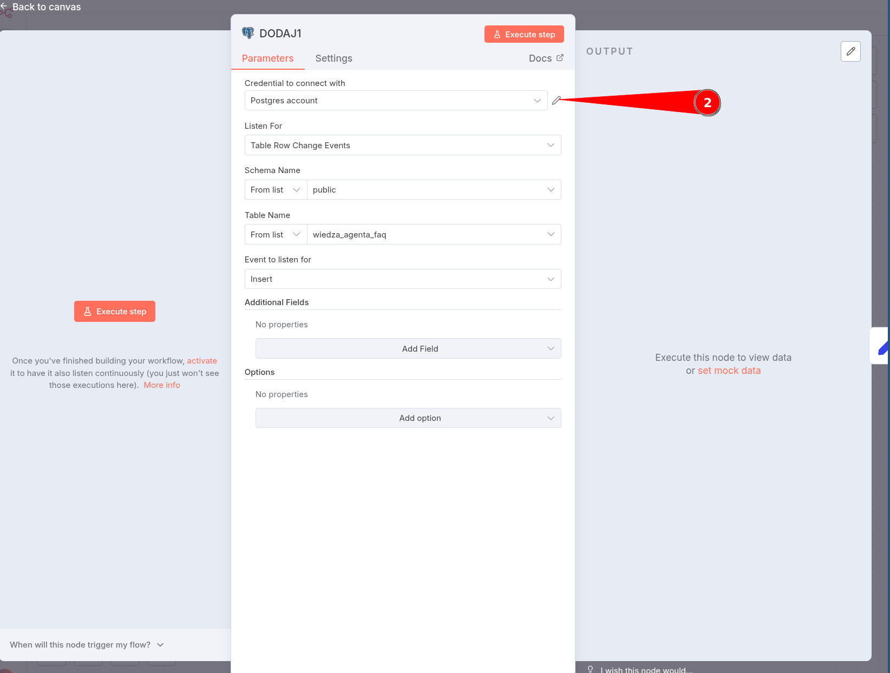

Rozwiązywanie problemów z workflowami z lekcji¶
Workflow z czytaniem danych klientów z formularza nie działa - Google Sheet ( Dane Klientów ) nie widzi Document i Sheet¶
-
Jeśli masz podświetlone na czerwono pola Document i Sheet

-
W pierwszej kolejności upewnij się, że masz wypełnione pole
Credentials to connect with -
Jeśli pole jest wypełnione, czyli dane dostępu ( Credentials ) są podpięte, kliknij w
Choose...w polu Document Jeśli lista jest pusta, oznacza to, że podpięte dane dostępu ( Credentials ) są poprawne, ale najprowdopodobniej nie masz jeszcze żadnego utworzonegoArkusza Google ( Google Sheet ) -
W takiej sytuacji wejdź na stronę Google Sheet (kliknij, żeby otworzyć stronę)
-
Następnie zaloguj się

-
Kliknij znak + Blank spreadsheet ( Pusty arkusz), aby utworzyć nowy arkusz ( google sheet )

-
Kliknij dwukrotnie we wskazane miejsca żeby zmienić nazwę dokumentu (Document), nazwę arkusza (Sheet) oraz aby wstawić nazwy kolumn
-
Po wypełnieniu powinno to wyglądać tak
-
Następnie wróć do n8n i w nodzie
Dane Klientów ( Google Sheet)kliknij w pole Document. Powinien się tam pojawić dokument, który właśnie został utworzony -
Następnie w polu Sheet wybierz nazwę arkusza w tym dokumencie. W przykładzie nazywał on się
Dane
-
Po wykonaniu tej operacji pojawią się pola o takich nazwach jak kolumny w naszym utworzonym dokumencie
Workflow z czytaniem lokalnych plików nie działa - Local Files Trigger nie reaguje (WERSJA DLA SYSTEMU WINDOWS)¶
-
Jeśli pracujesz na systemie Windows i masz podpięty prawidłowo wolumen do folderu
pliki_n8n, a Local Files Trigger nie reaguje
-
Kliknij dwukrotnie w node
Local File Trigger
-
Kliknij w
Add Option
-
Z listy wybierz
Use Polling -
Kliknij w suwak tak, żeby się zaświecił na zielono

-
Powtórz test, przenosząc plik ze zdjęciem do folderu, i teraz powinno działać
-
Jeśli wciąż nie działa, usuń kontener i spróbuj ponownie, uważając podczas ustawiania katalogów.
-
Po usunięciu kontenera przejdź do obrazów
Imagesi uruchom obraz trójkątnym przyciskiemRun
-
Pokaże się okno
Run a new container, rozwiń zakładkęOptional settingsi wypełnij wszystkie pola zgodnie ze schematem:- najpierw dodaj jako pierwszy wolumen ten, który już istniał (pod tymi samymi ścieżkami co wcześniej)
- jako drugi wolumen podepnij ten nowy folder na dodawanie plików

-
Aby sprawdzić, czy wszystko zrobiliśmy dobrze, w zakładce
Containerskliknij na nazwę kontenera, a następnie w zakładkęBind mounts: - Tutaj powinny być widoczne dwa foldery. Pierwszy na dane n8n, a drugi do przekazywania plików do workflow.
Workflow z czytaniem lokalnych plików nie działa - Local Files Trigger nie reaguje (WERSJA DLA SYSTEMU macOS)¶
-
Jeśli pracujesz na systemie macOS i masz podpięty prawidłowo wolumen do folderu
pliki_n8n, a Local Files Trigger nie reaguje -
Kliknij dwukrotnie w node
Local File Trigger -
Upewnij się, że suwak
Use Pollingnie jest zaznaczony i jest na szaro -
Powtórz test, przenosząc plik ze zdjęciem do folderu, i teraz powinno działać
-
Jeśli wciąż nie działa, usuń kontener i spróbuj ponownie, uważając podczas ustawiania katalogów.
-
Po usunięciu kontenera przejdź do obrazów
Imagesi uruchom obraz trójkątnym przyciskiemRun -
Pokaże się okno
Run a new container, rozwiń zakładkęOptional settingsi wypełnij wszystkie pola zgodnie ze schematem:- najpierw dodaj jako pierwszy wolumen ten, który już istniał (pod tymi samymi ścieżkami co wcześniej)
- jako drugi wolumen podepnij ten nowy folder na dodawanie plików
-
Aby sprawdzić, czy wszystko zrobiliśmy dobrze, w zakładce
Containerskliknij na nazwę kontenera, a następnie w zakładkęBind mounts: - Tutaj powinny być widoczne dwa foldery. Pierwszy na dane n8n, a drugi do przekazywania plików do workflow.
Workflow z modułu Agentka Elżbieta - nie widzę opcji w nodzie Gmail¶
-
Klikam w node Gmail i nie widzę opcji, które pokazane były na lekcji

-
Żeby naprawić ten problem, należy odznaczyć
Simplify(tak, żeby było nieaktywne i nie świeciło się na zielono) -
Po deaktywacji
Simplifybędziemy mogli dodać opcje (np.Download attachments)
Workflow z modułu Agentka Elżbieta - nie widzę zakładki Binary w nodzie Gmail po pobraniu danych¶
-
Po pobraniu testowego maila z załącznikami nie widzę zakładki
Binaryw sekcjiOutput
-
Zakładka Binary widoczna jest jedynie w sytuacji, gdy pobrane zostaną pliki. Node nie pobierze plików, jeżeli nie zaznaczymy opcji
Download attachments. Należy zatem zaznaczyć tę opcję i ponownie pobrać dane.
Generowanie zdjęcia w module o Adamie Marketingowcu nie działa¶
Wyświetla się taki błąd:

-
Błąd informuje nas o tym, że żeby użyć modelu
gpt-image-1musimy zweryfikować naszą organizację w OpenAI. Wymaga to zweryfikowania metody płatności i zweryfikowania naszej tożsamości. -
Następnie należy przejść do strony OpenAI i wybrać ustawienia organizacji.
-
Następnie należy kliknąć w
Verify Organization
-
Następnie należy kliknąć w
Start ID Checki podążać za dalszymi instrukcjami.
-
Po zweryfikowaniu naszej tożsamości, możemy ponownie spróbować wygenerować zdjęcie. Tak wygląda strona po zweryfikowaniu naszej tożsamości

Workflow nie działa - błąd "Bad request - please check your parameters"¶
-
Jeśli podczas wykonywania workflow widzisz błąd
Bad request - please check your parametersw node'zie z polską nazwą:
-
W sekcji
Outputzobaczysz szczegółowy błąd informujący o nieprawidłowej nazwie funkcji, która nie pasuje do wzorca^[a-zA-Z0-9_-]+$ -
Problem występuje w node'ach z polskimi znakami w nazwie (ą, ć, ę, ł, ń, ó, ś, ź, ż), które nie są dozwolone w niektórych kontekstach API
Rozwiązanie:¶
-
Zmień nazwę node'a na angielską lub usuń polskie znaki:
- zamiast "Agent kategoryzujący faktury" użyj "Agent_kategoryzujacy_faktury" lub "Invoice_Categorizer"
- zamiast "rejestr_kosztów_kategoria1" użyj "rejestr_kosztow_kategoria1" lub "cost_register_category1"
-
Kliknij dwukrotnie na problematyczny node, aby otworzyć jego ustawienia
-
W górnej części znajdź pole z nazwą node'a i zmień ją na wersję bez polskich znaków
-
Zapisz zmiany i uruchom workflow ponownie
Dozwolone znaki w nazwach node'ów:¶
- Litery angielskie:
a-z,A-Z - Cyfry:
0-9 - Podkreślnik:
_ - Myślnik:
-
Niedozwolone znaki:¶
- Polskie znaki diakrytyczne:
ą,ć,ę,ł,ń,ó,ś,ź,ż - Spacje (użyj podkreślnika zamiast spacji)
- Znaki specjalne:
@,#,$,%,&,*,(,),+,=, itp.
Workflow nie działa: Google Docs node - błąd "Bad request - please check your parameters"¶
-
Jeśli podczas wykonywania workflow widzisz błąd
Bad request - please check your parametersw nodzie Google Docs, a ID dokumentu jest poprawnie odczytywane, lecz node dalej nie przetwarza pliku: -
W sekcji
OutputpoleError detailsbędzie puste, bez dodatkowych informacji o przyczynie błędu. Najprawdopodobniej problem jest spowodowany typem pliku. Node Google Docs wymaga plików w natywnym formacie Google Workspace.
Rozwiązanie:¶
Workflow nie działa: Workflow nasłuchujący na zmiany w bazie danych Postgres ( Supabase ) nie odpowiada¶
Problem:¶
Uruchamiam workflow zgodnie z instrukcją z lekcji. Workflow się kręci i nie odpowiada lub po około minucie zwraca błąd.
Prawdopodobna przyczyna:¶
- Problem najprawdopodobniej wynika z wyboru typu połączenia z bazą danych.
W lekcji poświęconej łączeniu
Postgres z n8nzostało to wyjaśnione jak skonfigurować połączenie oparte o transakcje (Transaction pooler). DziałanieTriggerówwymaga jednak połączenia opartego o sesje (Session pooler). Te 2 konfiguracje wSupabaseróżnią się jedyniePortemi to właśnie tę wartość należy zmienić, żeby rozwiązać problem.
Rozwiązanie:¶
-
Otwórz dowolny node
Postgres Trigger -
Kliknij w
Ołówekw poluCredentials to connect with, żeby edytować dane dostępu do bazy danych.  -
Zjedź na dół do pola
Porti sprawdź czy jest tam wartość5432. Jeśli jest inny, to należy go zmienić na5432.